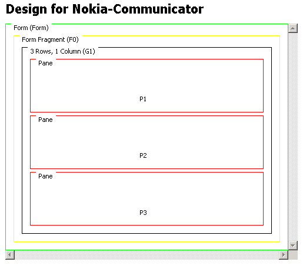

You can use form fragments to manage the display of forms that are too large to present on devices with small screens. MCS combines the results from each of the form fragments before the form's data is processed.
You create form fragments by inserting fragments into the content of a form (rows or columns).
Note: Form fragments should only used be inside forms and not inside other form fragments.

Related information
Canvas layouts
and panes